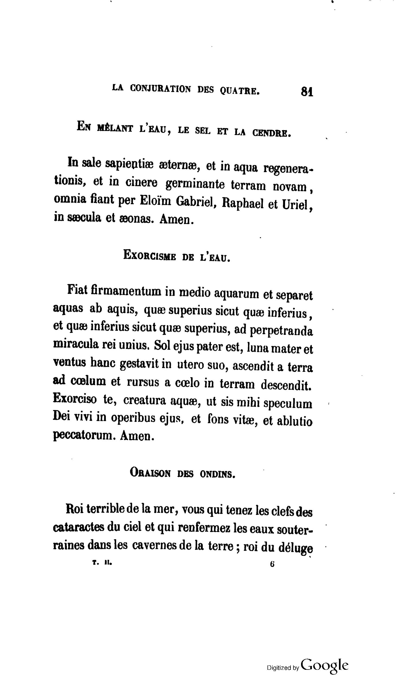
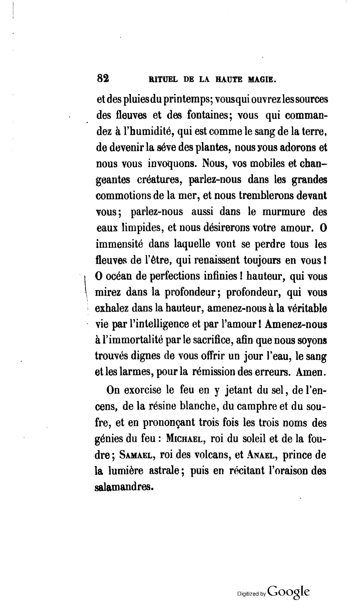

Levi's French
ORAISON DES ONDINS
DOGME ET RITUEL DE LA HAUTE MAGIE (1861)

{kind=link}
pg 81

{kind=link}
pg 82
| 1 | Roi terrible de la mer, |
| 2 | vous qui tenez les clefs des cataractes du ciel |
| 3 | et qui renfermez les eaux souterraines dans les cavernes de la terre; |
| 4 | roi du déluge et des pluies du printemps; |
| 5 | vous qui ouvrez les sources des fleuves et des fontaines ; |
| 6 | vous qui commandez à l'humidité, |
| 7 | qui est comme le sang de la terre, |
| 8 | de devenir la sève des plantes, |
| 9 | nous vous adorons et nous vous invoquons. |
| 10 | Nous, vos mobiles et changeantes créatures, |
| 11 | parlez-nous dans les grandes commotions de la mer, |
| 12 | et nous tremblerons devant vous ; |
| 13 | parlez-nous aussi dans le murmure des eaux limpides, |
| 14 | et nous désirerons votre amour. |
| 15 | O immensité dans laquelle vont se perdre tous les fleuves de l'être, |
| 16 | qui renaissent toujours en vous! |
| 17 | O océan de perfections infinies! |
| 18 | hauteur qui vous mirez dans la profondeur; |
| 19 | profondeur, qui exhalez dans la hauteur, |
| 20 | amenez-nous à la véritable vie par l'intelligence et par l'amour ! |
| 21 | Amenez-nous à l'immortalité par le sacrifice, |
| 22 | afin que nous soyons trouvés dignes de vous offrir un jour l'eau, le sang et les larmes |
| 23 | pour la rémission des erreurs. |
| 24 | Amen. |
| 1 | Terrible king of the seas, |
| 2 | Thou who holds the keys to the floodgates of heaven |
| 3 | and who relocks the subterranean waters into the caverns of the Earth; |
| 4 | king of the deluge and of the rains of spring; |
| 5 | thou who opens the sources of rivers and of fountains; |
| 6 | thou who commands the moisture, |
| 7 | which is like the blood of the Earth, |
| 8 | to become the sap of plants, |
| 9 | we adore thee and we invoke thee. |
| 10 | We, thine moving and changing creatures, |
| 11 | speak to us through the great commotions of the sea, |
| 12 | and we shall tremble before thee; |
| 13 | speak to us also through the murmur of limpid waters, |
| 14 | and we shall desire your love. |
| 15 | O immensity into which flow all rivers of being, |
| 16 | which are forever reborn in thee! |
| 17 | O ocean of infinite perfections! |
| 18 | height which you reflect into the depth; |
| 19 | depth which you exhale into the height, |
| 20 | bring us to true life through intelligence and through love! |
| 21 | bring us to immortality through sacrifice, |
| 22 | so that we may be found worthy one day to offer you the water, the blood, and the tears |
| 23 | for the absolution of errors. |
| 24 | Amen. |
| Sources: |
| green = Mathers. "3 = 8 Practicus Grade" in The Complete Golden Dawn, vol 6 (Santa Monica, California: Falcon Press, 1987) 133. |
| blue = Waite. Transcendental Magic (York Beach, ME: Weiser Books, 2001) 231. |
| red = Greer and Mikituk. The Doctrine and Ritual of High Magic (New York, NY: tarcher perigee, 2017) 239. |
| black = Our new translation, notes in italic. |
| 1 | Roi terrible de la mer, |
| Terrible King of the Sea, | |
| Dread King of the Sea, | |
| Terrible king of the seas, | |
| Terrible king of the seas, | |
| 2 | vous qui tenez les clefs des cataractes du ciel |
| Thou who holdest the Keys of the Cataracts of Heaven | |
| Who hast the keys of the floodgates of heaven | |
| you who hold the keys to the cataracts of the heavens | |
| Thou who holds the keys to the floodgates of heaven | |
| 3 | et qui renfermez les eaux souterraines dans les cavernes de la terre; |
| and who enclosest the subterranean Waters in the cavernous hollows of Earth; | |
| and dost confine the waters of the underworld in the caverns of earth; | |
| and who enclose the subterranean waters in the caverns of the Earth; | |
| and who relocks the subterranean waters into the caverns of the Earth; | |
| 4 | roi du déluge et des pluies du printemps; |
| King of the Deluge and of the Rains of Spring; | |
| King of the deluge and the floods of the springtime; | |
| King of the deluge and of the rains of spring; | |
| king of the deluge and of the rains of spring; | |
| 5 | vous qui ouvrez les sources des fleuves et des fontaines ; |
| Thou who openest the sources of the Rivers and of the Fountains, | |
| Thou Who dost unseal the sources of rivers and fountains; | |
| you who open the sources of the rivers and the fountains; | |
| thou who opens the sources of rivers and of fountains; | |
| 6 | vous qui commandez à l'humidité, |
| Thou who commandest moisture | |
| Thou Who dost ordain moisture, | |
| you who command humidity, | |
| thou who commands the moisture, | |
| 7 | qui est comme le sang de la terre, |
| which is as it were the blood of the earth, | |
| which is like the blood of earth, | |
| which is like the blood of the Earth, | |
| which is like the blood of the Earth, | |
| 8 | de devenir la sève des plantes, |
| to become the sap of the plants, | |
| to become the sap of plants: | |
| to become the sap of plants, | |
| to become the sap of plants, | |
| 9 | nous vous adorons et nous vous invoquons. |
| we adore Thee and we invoke Thee. | |
| Thee we adore and Thee the invoke! | |
| we adore you and invoke you. | |
| we adore thee and we invoke thee. | |
| 10 | Nous, vos mobiles et changeantes créatures, |
| Speak thou unto us Thy mobile and changeful creatures | |
| Speak unto us, Thine inconstant and unstable creatures, | |
| We, your mobile and ever-changing creatures, | |
| We, thine moving and changing creatures, | |
| 11 | parlez-nous dans les grandes commotions de la mer, |
| in the great Tempests of the Sea, | |
| in the great tumults of the sea, | |
| speak to us through the great commotions of the sea, | |
| speak to us through the great commotions of the sea, | |
| 12 | et nous tremblerons devant vous ; |
| and we shall tremble before Thee. | |
| and we shall tremble before Thee; | |
| and we shall tremble before you; | |
| and we shall tremble before thee; | |
| 13 | parlez-nous aussi dans le murmure des eaux limpides, |
| Speak to us also in the murmur of the limpid waters | |
| speak unto us also in the murmur of limpid waters, | |
| speak to us also through the murmurs of limpid waters, | |
| speak to us also through the murmur of limpid waters, | |
| 14 | et nous désirerons votre amour. |
| and we shall desire thy love. | |
| and we shall yearn for Thy love! | |
| and we shall desire your love. | |
| and we shall desire your love. | |
| 15 | O immensité dans laquelle vont se perdre tous les fleuves de l'être, |
| O Vastness wherein all the Rivers of Being seek to lose themselves, | |
| O Immensity into which flow all rivers of life, | |
| O immensity within which shall be lost all the rivers of being, | |
| O immensity into which flow all rivers of being, | |
| 16 | qui renaissent toujours en vous! |
| which renew themselves ever in Thee, | |
| to be continually reborn in Thee! | |
| which are always reborn within you! | |
| which are forever reborn in thee! | |
| 17 | O océan de perfections infinies! |
| O Thou Ocean of infinite perfections, | |
| O ocean of infinite perfections! | |
| O ocean of infinite perfections! | |
| O ocean of infinite perfections! | |
| 18 | hauteur qui vous mirez dans la profondeur; |
| O Height which reflectest Thyself in the Depth, | |
| Height which reflects Thee in the depth, | |
| the heights, which you reflect in the depths; | |
| height which you reflect into the depth; | |
| 19 | profondeur, qui exhalez dans la hauteur, |
| O Depth which exhalest thyself into the Height, | |
| depth which exhales Thee to the height, | |
| the depths, which you exhale in the heights, | |
| depth which you exhale into the height, | |
| 20 | amenez-nous à la véritable vie par l'intelligence et par l'amour ! |
| lead us into the true Life through Intelligence, through Love. | |
| lead us unto true life by intelligence and love! | |
| [not included] | |
| bring us to true life through intelligence and through love! | |
| 21 | Amenez-nous à l'immortalité par le sacrifice, |
| Lead us unto Immortality through sacrifice, | |
| Lead us to immortality by sacrifice, | |
| bring us to immortality through sacrifice, | |
| bring us to immortality through sacrifice, | |
| 22 | afin que nous soyons trouvés dignes de vous offrir un jour l'eau, le sang et les larmes |
| so that we may be found worthy to offer one day unto Thee, the Water, the Blood and the Tears, | |
| that we may be found worthy one day to offer Thee water, blood and tears, | |
| so that we are found to be worthy of offering you a day of water, the blood and tears, | |
| so that we may be found worthy one day to offer you the water, the blood, and the tears | |
| 23 | pour la rémission des erreurs. |
| for the remission of Sins. | |
| for the remission of sins! | |
| for the absolution of our errors. | |
| for the absolution of errors. | |
| 24 | Amen. |
| Amen. | |
| Amen. | |
| Amen. | |
| Amen. |